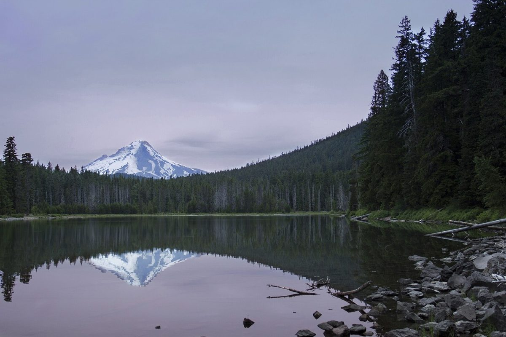

配置図ひらいた携帯電話の六つの部位
①②
マルポタ舎
③
④⑤⑥
123456789*0#
- ①
- ②
- ③
- ④
十字キー
上下左右へ進むボタン。ここではページ送り。
各ページ下部 - ⑤
- ⑥
この題材は制作側の連想で、お店の理念・由来とは無関係です。


写真はすべてイメージです(お店の写真ではありません)
②お店の情報
| 屋号 | マルポタ舎(カフェ) |
|---|---|
| 所在地 | 〒529-1851 滋賀県甲賀市信楽町長野1198-5 |
| 電話 | 準備中 |
| 営業時間 | 準備中 |
| 定休日 | 準備中 |
| @marupotasha |
確認できているのは所在地とInstagramのみです。営業時間・定休日・メニュー・価格・予約・駐車場は準備中です。



下の三枚もフリー素材のイメージです